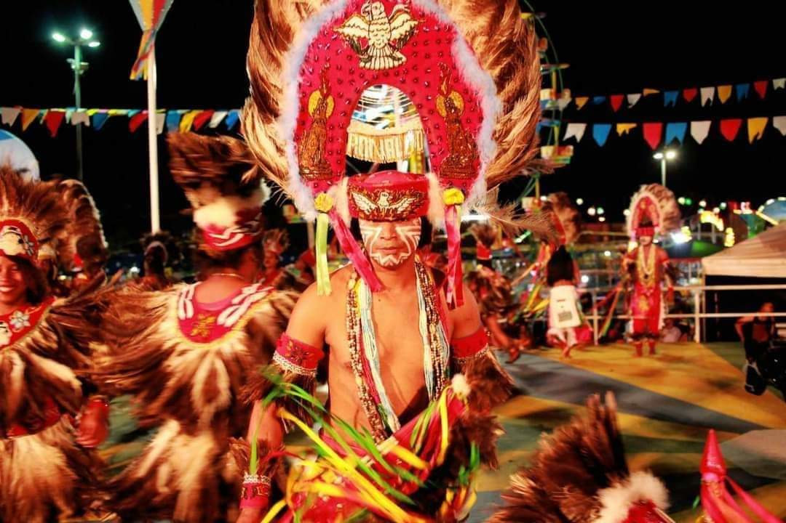

Desenvolvendo minha história
Este site é uma grande conquista profissional , nele vou explanar um pouco da minha história cultural minha vida profissional e familiar. Nesse momento estou dando os meus passos na área de TI com muita satisfação e dedicação, esperando alcançar um alto nível de desenvolvimento me adequando para as oportunidades profissionais.
minhas certificações
Assim Comecei o ano de 2022!
no começo desse semestre iniciei o meu projeto na Estácio, cursando análise e desenvolvimento de sistemas. Também estou fazendo alguns cursos de extensão e mais à frente pretendo fazer um curso de inglê. Estou terminando HTML5 e CSS com o professor Gustavo Guanabara do curso em vídeo.
minha história dentro da Cultura
A temporada junina É uma temporada muito bonita aqui no Maranhão, temos o bumba boi o tambor de crioula quadrilhas e cacuriá e muito mais. Eu no meu momento de lazer faço parte de dois Bumba bois(Capricho do Bom Jesus e fruto da raça chow)onde danço vestido de índio
A história que envolve a dança do bumba meu boi está ligada à lenda de um casal de escravizados, chamados Pai Francisco e Mãe Catirina (ou Catarina). Catirina estava grávida e começou a ter desejos por língua de boi. Seu marido, para atender o desejo da esposa gestante, matou o bonito de seu senhor.
sobre a nossa culinária maranhense
também preparei dentro do meu horário livre alguns vídeos com receitas da nossa culinária maranhense